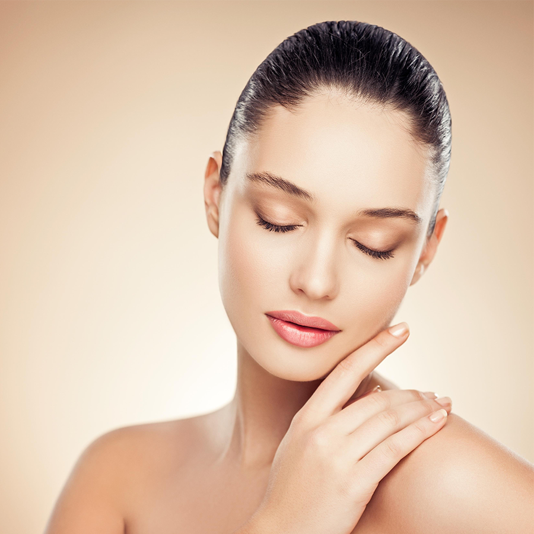
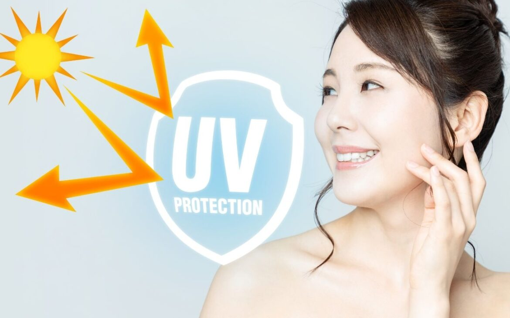
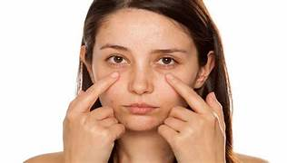

Rich in vitamins A, B complex and C , apple benefits your skin by helping get rid of pathogens and excess oil.
Eating apples regularly can brighten your skin as well as correct uneven skin tone.
The antioxidants in this fruit accelerate skin cell rejuvenation and help maintain healthy and glowing
How to use:
Apart from including it in your diet, you can also make an apple face mask by grating some green apple
and applying it on your face. This will maintain your skin’s natural pH balance and keep common skin issues at bay.
prevents premature ageing
Pollution, sun exposure and other environmental stressors cause free radical damage to your skin.
These free radicals break down the collagen and elastin fibres in the skin to make fine lines and wrinkles appear sooner
and more prominently. Vitamin C is a powerful antioxidant that can help address the problem of premature ageing.
Apples contain plenty of vitamin C and when consumed on a regular basis, can reduce the premature signs of ageing on
the skin.
How to use:
To reap apple benefits for the skin, extract the juice of an apple and apply all over the face and neck
area using a cotton ball. Allow it to dry and then rinse using water, do this 2-3 times a week for best results.
treating acne and blemishes
Did you know regular consumption of green apples can help control the occurrence of acne and pimples?
If you have active acne, blemishes or dark spots, they can also be corrected with the help of apples.
If chemicals-based acne creams aren’t helping, this nutrient-rich fruit might be the answer to your prayers.
How to use:
Mash one slice of apple and mix it with a tablespoon of milk.
Apply this mixture on the affected areas to get relief from acne, blemishes and dark spots.
hydrates skin

Apple has water-binding properties that can help keep skin nourished and hydrated .
Hydration is the secret to soft, supple and glowing skin.
While consuming your daily recommended water intake is important,
it alone may not be able to hydrate your entire body. It is essential to include fruits and vegetables that hydrate your skin.
The high water-content in apples makes it an excellent option for sustaining hydration levels.
How to use:
Cut one apple into thin slices and apply all over your face immediately to obtain all the apple benefits for skin. Let it stay for 15-20 minutes and splash some water to get soft and hydrated skin.
offers UV protection

When we say that one of the benefits of apples for skin is that it offers UV protection,
we do not mean you can skip sunscreen. Some nutrients in apples are known to offer protection
from the harsh rays of the sun. Apples can also be used in the treatment of sunburns, it helps soothe the area, calms irritated skin and the burning sensation.
How to use:
Grate one apple to get the pulp, add a teaspoon of glycerine to it and blend to get a smooth paste.
Apply this paste evenly on face and neck, leave it on for 15 minutes then rinse with cold water.
Reduces dark circles and puffy eyes

puffyeyes
Another apple benefit for the skin is that it has the ability to reduce dark circles and puffy eyes.
Stress, lack of sleep and other reasons can cause pigmentation under the eye. Apples can help lighten these dark circles
and make your under-eye area appear brighter.
How to use:
Cut apple slices and place them under your eye and relax for 20 minutes.
You can also boil a few slices of apple in water, once they are soft, mash them and apply this under your eyes to
lighten the pigmentation.
hey,whatsup